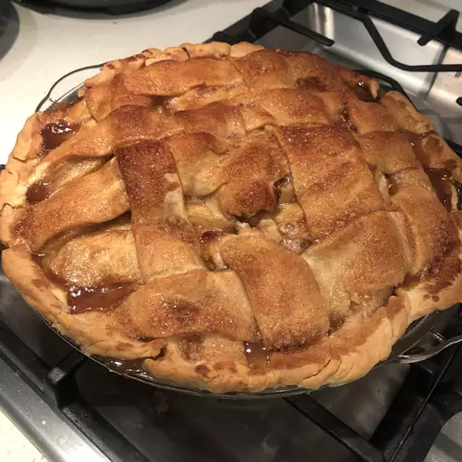

A Nostalgia Filled Sweet Apple Desert
This amazing apple pie recipe belonged to my grandmother. I have never seen another one quite like it! It will always be my favorite and has won several first place prizes in local competitions. It makes the perfect dessert for family dinners or during the holidays, topped with whipped cream or ice cream, or alongside a slice of Cheddar cheese.